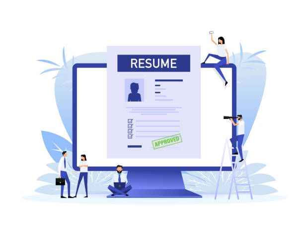

Dans un marché du travail toujours plus compétitif, un CV percutant est votre meilleur allié pour capter l'attention des recruteurs. Votre CV est bien plus qu'une simple liste de compétences et d'expériences : c'est votre carte de visite professionnelle. Mais comment sortir du lot ? Dans cet article, découvrez 5 astuces indispensables pour transformer votre CV en un outil irrésistible aux yeux des employeurs. Lisez jusqu'au bout pour appliquer ces conseils dès aujourd'hui et booster vos chances de décrocher l'emploi de vos rêves !
Astuce 1 : Misez sur un Design Clair et Professionnel
Un CV bien présenté est la première impression que vous laissez à un recruteur. Optez pour un design moderne, mais sobre, qui met en valeur vos informations sans surcharger la mise en page. Privilégiez une structure aérée avec des sections clairement délimitées : expérience, compétences, formation, etc.
- Utilisez une police lisible comme Arial ou Calibri.
- Limitez les couleurs à une ou deux, choisies judicieusement pour refléter votre professionnalisme.
- Ajoutez une touche personnelle avec une légère mise en avant de vos sections clés.
💡 Conseil pratique : Si vous n'êtes pas à l'aise avec le design, utilisez des modèles gratuits ou premium disponibles sur des plateformes comme Canva ou Zety.
Astuce 2 : Adaptez Votre CV à Chaque Offre d'Emploi

Un CV générique a peu de chances de se démarquer. Prenez le temps d'adapter votre document à chaque poste pour lequel vous postulez. Analysez l'offre d'emploi et identifiez les compétences ou expériences que le recruteur recherche. Ensuite, mettez-les en avant dans votre CV.
- Réutilisez les mots-clés présents dans l'annonce.
- Développez les expériences qui correspondent directement aux responsabilités du poste visé.
- Supprimez les informations non pertinentes pour éviter de surcharger votre CV.
💡 Astuce bonus : Les logiciels de recrutement (ATS) analysent souvent les CV à la recherche de mots-clés. En personnalisant votre CV pour chaque poste, vous augmentez vos chances de passer ce premier filtre.
Astuce 3 : Soignez Votre Accroche Personnelle
Une accroche personnelle bien rédigée peut captiver le recruteur dès les premières lignes. Située en haut de votre CV, cette section doit refléter vos objectifs professionnels et vos atouts majeurs.
- Résumez en 2 à 3 phrases ce qui vous rend unique et pertinent pour le poste.
- Utilisez un ton affirmé, mais restez concis.
Exemple :
"Professionnel du marketing digital avec 5 ans d'expérience dans la gestion de campagnes publicitaires performantes. Passionné par l'innovation, je suis motivé par les projets qui allient créativité et analyse stratégique."
Astuce 4 : Quantifiez Vos Réalisations

Les recruteurs adorent les chiffres ! Ils permettent de mesurer concrètement votre impact dans vos précédentes expériences. Plutôt que de simplement énumérer vos responsabilités, mettez en avant vos résultats avec des données chiffrées.
- Combien de projets avez-vous menés à bien ?
- Quel pourcentage de croissance avez-vous généré ?
- Combien d'employés avez-vous encadrés ?
Exemple :
"Augmentation de 35 % du trafic organique sur le site web grâce à une stratégie SEO optimisée."
Ce type de donnée rend votre CV bien plus convaincant et attire immédiatement l'attention.
Astuce 5 : Ajoutez une Section Compétences Clés
Les recruteurs n'ont souvent que quelques secondes à consacrer à chaque CV. Une section "Compétences clés" permet de leur donner un aperçu instantané de vos atouts principaux. Divisez cette section en deux parties :
- Compétences techniques : maîtrise des outils, logiciels spécifiques, langues étrangères, etc.
- Compétences humaines : leadership, esprit d'équipe, capacité d'adaptation…
💡 Rappel important : Assurez-vous que les compétences listées correspondent à celles demandées dans l'offre d'emploi.
Conclusion
Un CV percutant est la clé pour décrocher un entretien et faire un pas de plus vers votre carrière idéale. En soignant la présentation, en adaptant chaque candidature et en mettant en avant vos réalisations chiffrées, vous donnez à votre CV toutes les chances de captiver les recruteurs. Alors, qu'attendez-vous ? Appliquez ces 5 conseils dès aujourd'hui et démarquez-vous sur le marché du travail !
Envie de passer à l'action ?
Relisez votre CV et appliquez ces astuces dès maintenant. Vous verrez rapidement la différence dans vos candidatures. Bonne chance dans votre recherche d'emploi !
Télécharger le Guide Complet